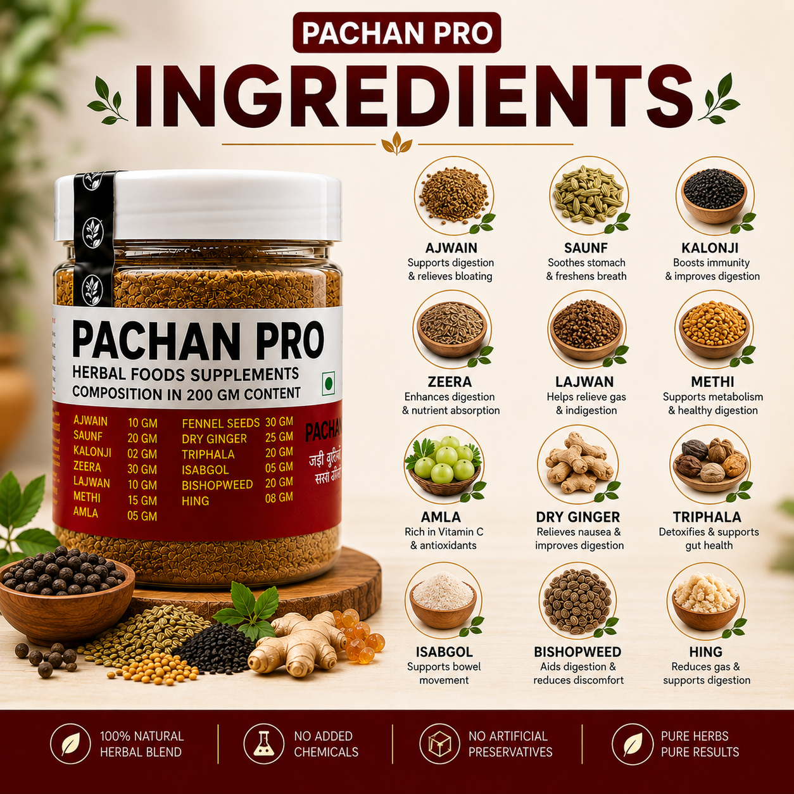
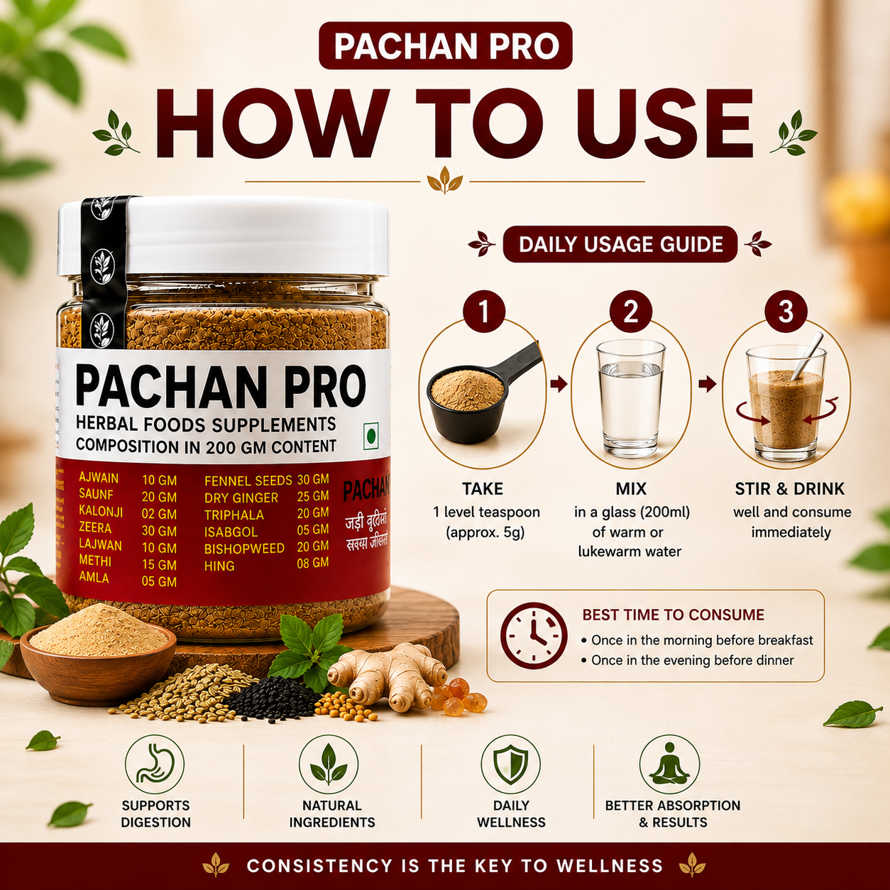
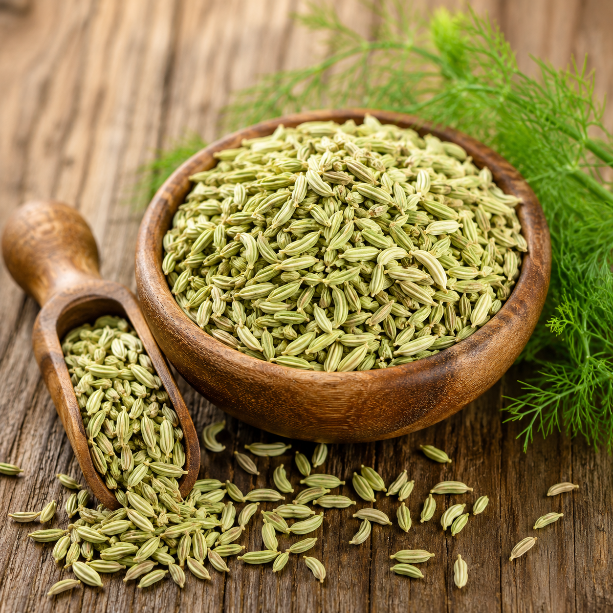
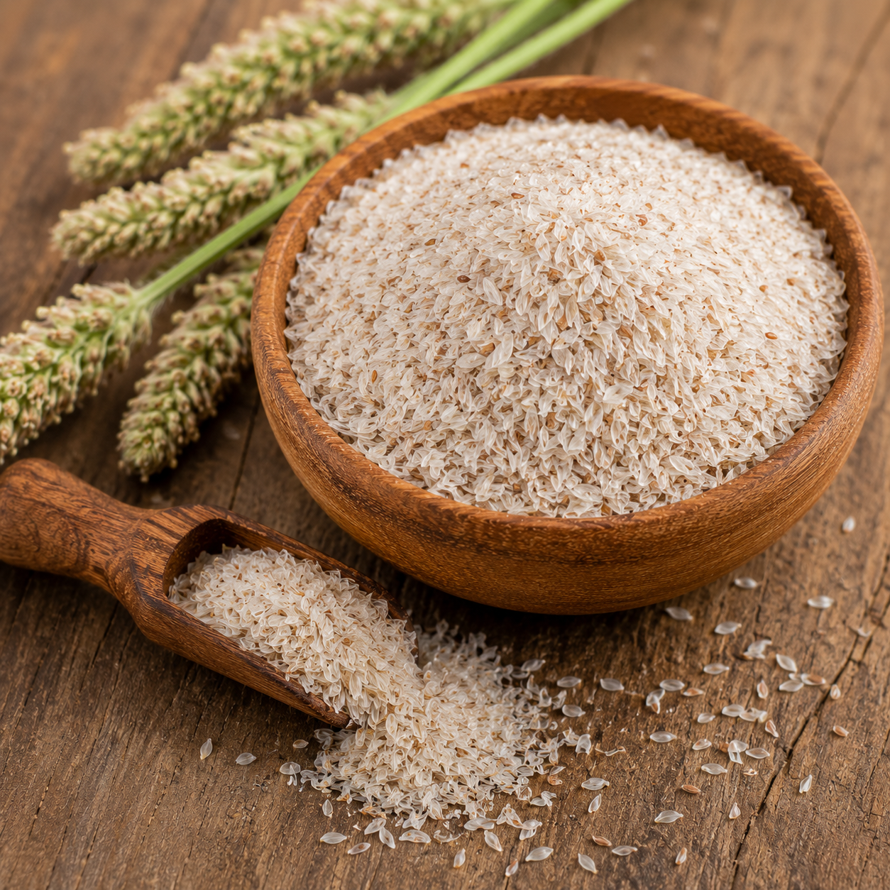
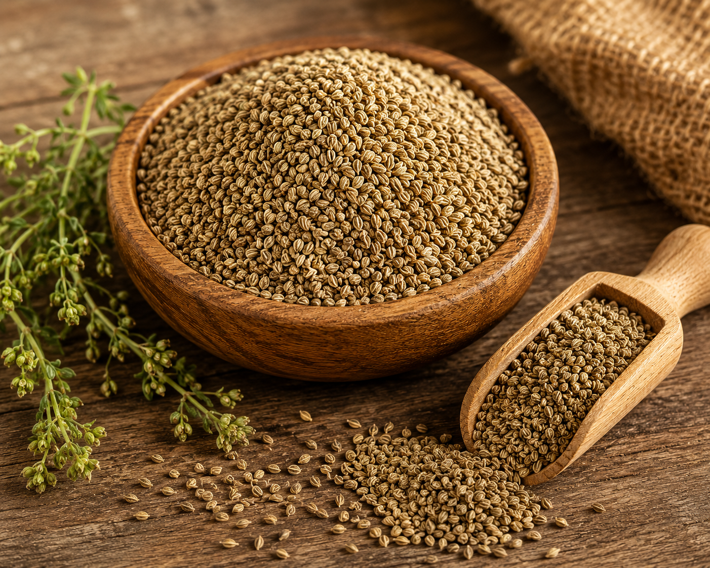
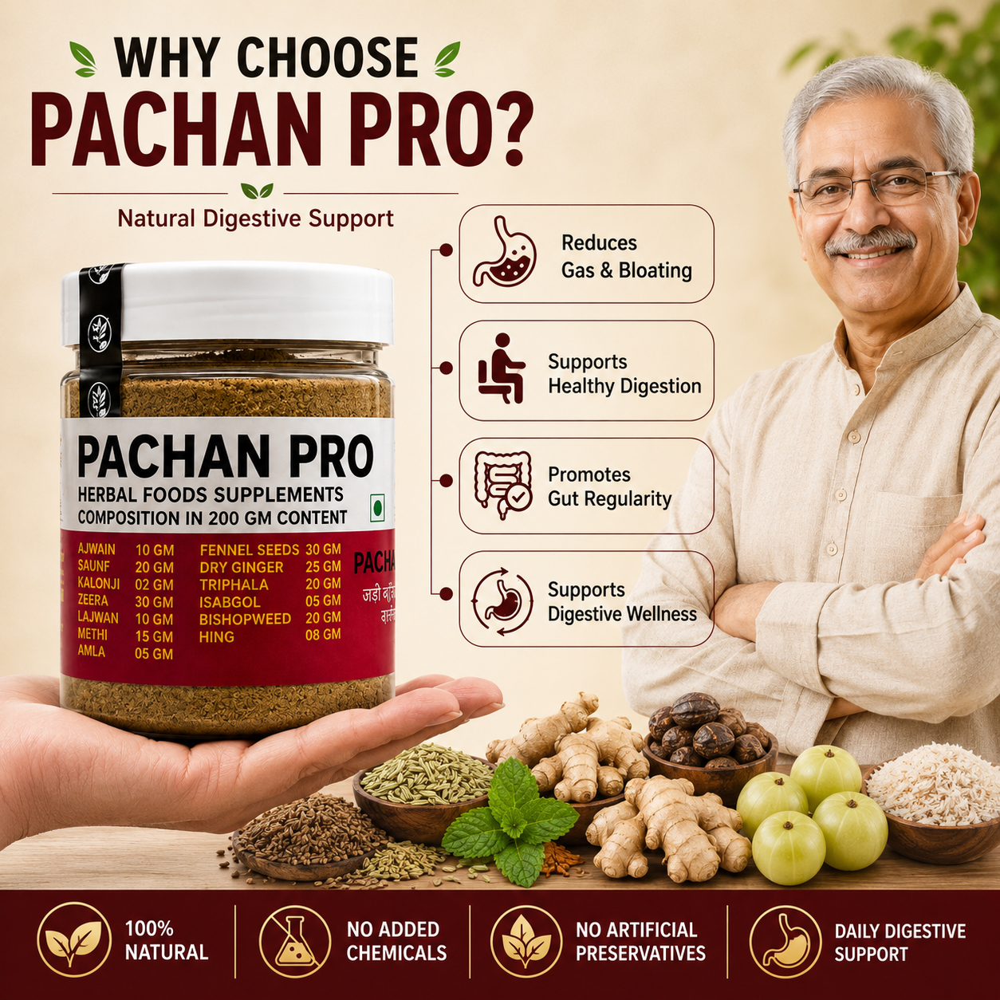
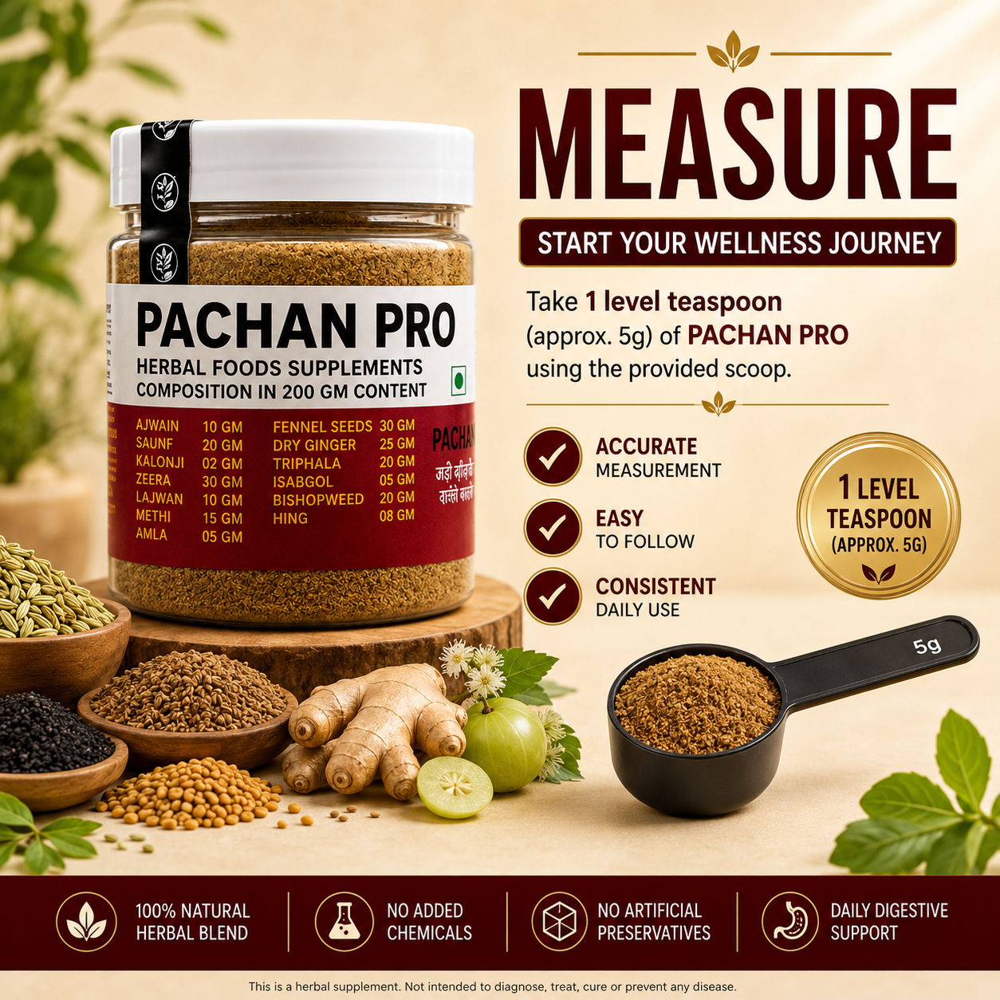
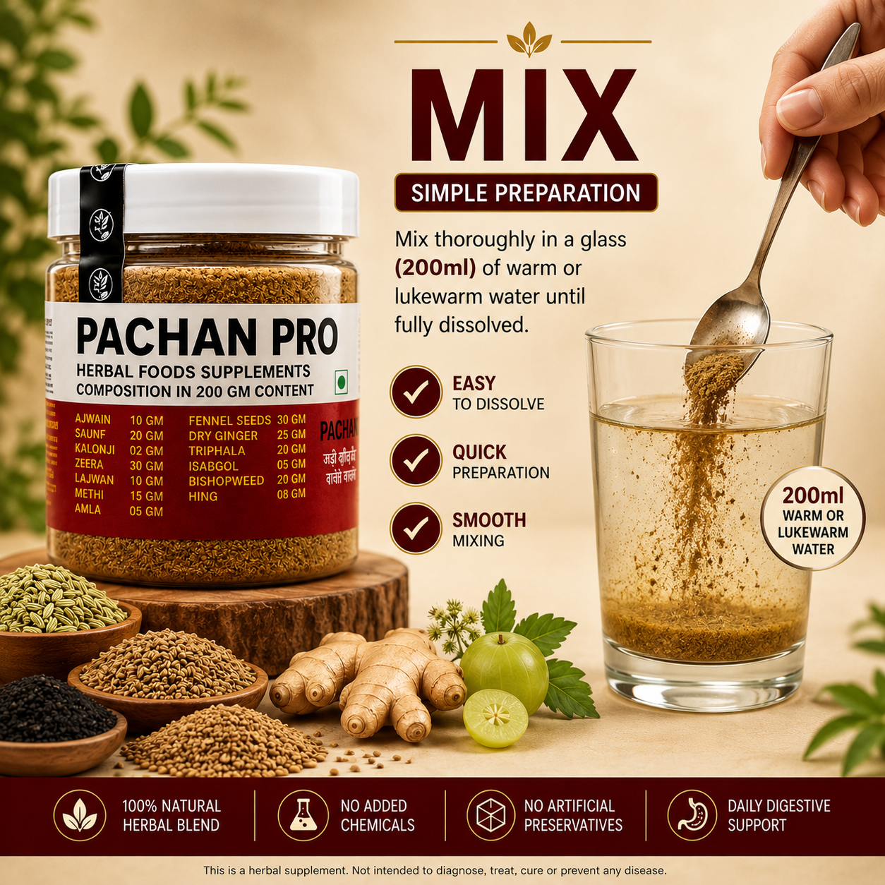

Ayurvedic Digestive Powder for Gas & Indigestion Relief
Get relief from digestive discomfort with Paachan Pro. Made with trusted Ayurvedic herbs, this formula naturally relieves bloating, gas, and indigestion while supporting healthy digestion.
Honest, Transparent, and 100% Natural Ingredients

Relieves bloating and gas while soothing the digestive tract naturally
Soothes digestive discomfort and supports healthy digestion after meals
Promotes healthy bowel movement and supports complete gut detoxification

Supports gut health and regularity with natural fiber for smooth digestion
Cools and freshens digestion while relieving stomach discomfort naturally

Reduces gas and indigestion with powerful carminative and digestive properties
Because your gut health deserves the best


Take 1 scoop (2-3g) of powder

Mix in lukewarm water and stir well
Drink 15-20 minutes before meals
Use 1-2 times daily for best results
Real results from real people who trusted Paachan Pro.
"Bahut gas aur bloating rehti thi. Paachan Pro liya to 4-5 din mein hi farak dikh gaya. Ab pet bilkul light rehta hai."
"Subah uthte hi pet bhari bhari lagta tha. Paachan Pro se ab digestion smooth ho gayi hai aur din fresh start hota hai."
"Maine bahut digestive products try kiye but chemical wale nuksaan karte the. Paachan Pro Ayurvedic hai, koi side effect nahi hua. Best hai."
"Khana khane ke baad acidity aur discomfort bahut hota tha. Ab Paachan Pro se kaafi improvement aaya hai. Highly recommend karti hoon."
"Taking Paachan Pro every morning keeps my stomach healthy. Easy to use and I can clearly feel the results. Highly recommended."
Everything you need to know about Paachan Pro.
Paachan Pro is an Ayurvedic herbal powder that naturally supports digestion. It contains Triphala, Isabgol, Saunf, Ajwain and other natural herbs that help relieve gas, bloating and indigestion.
Paachan Pro is suitable for adults who are troubled by bloating, gas, indigestion, or irregular bowel movements. Made with natural Ayurvedic ingredients, it is generally safe for daily use.
Its Ayurvedic ingredients support digestive enzymes, improve gut movement, and naturally reduce gas and bloating. Triphala and Isabgol maintain bowel regularity while Saunf and Ajwain provide immediate relief.
Mix 1 scoop (2-3g) of powder in lukewarm water and drink it 15-20 minutes before meals. For best results, use 1-2 times a day. Regular use will provide long-term relief.
Results vary from person to person. With regular use and a healthy diet, you may start noticing a difference within 2-4 weeks. Consistent use leads to long-term gut health improvement.
Yes, Paachan Pro is made with natural Ayurvedic ingredients and is safe for daily use. If you have any underlying health condition, please consult your doctor. Consult a doctor during pregnancy and breastfeeding.
Research published in the Journal of Ethnopharmacology showed Triphala extract effectively supports gut motility and promotes healthy digestive function.
International Journal of Ayurveda Research confirmed that fennel seed and dry ginger combination demonstrated significant relief in bloating and functional indigestion symptoms.
Phytotherapy Research Journal published findings showing Isabgol (Psyllium) husk improves bowel regularity and supports a healthy gut microbiome.